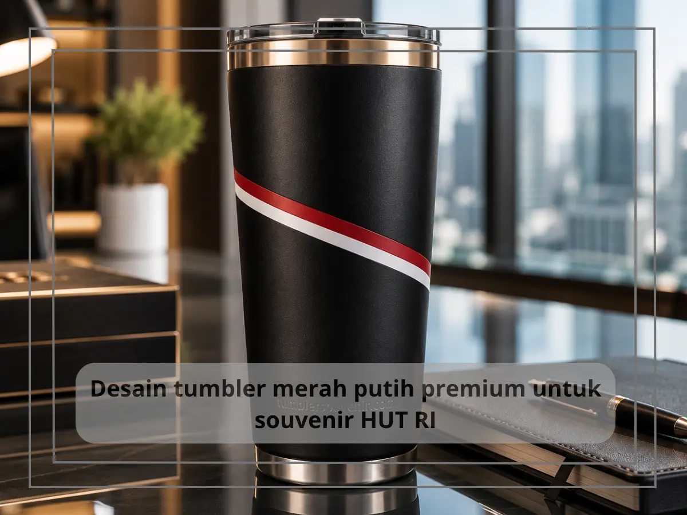
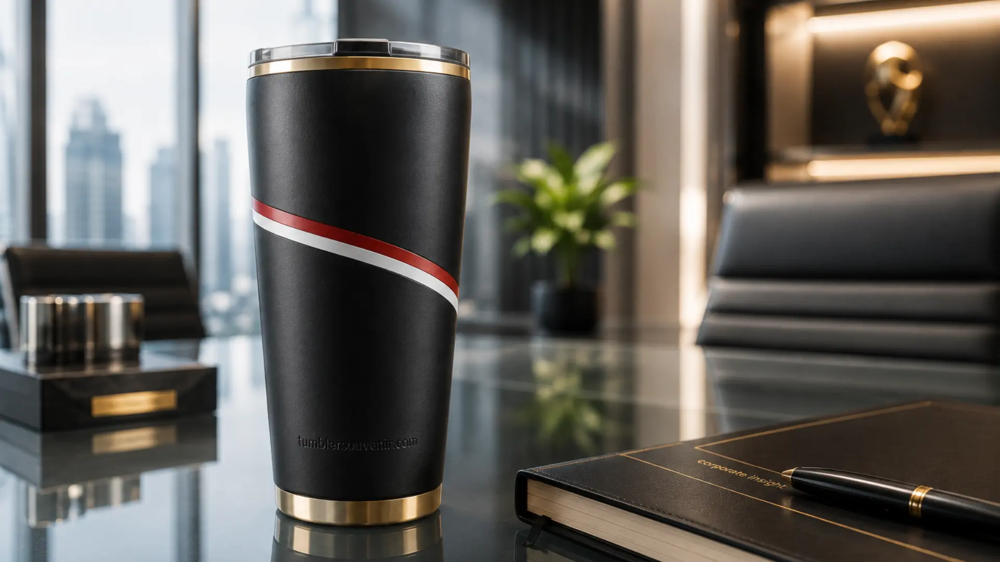

Desain Tumbler Merah Putih Elegan untuk Souvenir HUT RI
Ringkasan
Desain tumbler merah putih yang elegan untuk HUT RI mengutamakan komposisi warna yang tegas namun tidak berlebihan, dipadukan dengan tipografi minimalis dan penempatan logo perusahaan yang rapi. Pendekatan ini membuat tumbler tetap terlihat profesional meskipun mengusung tema nasionalisme. Warna merah dan putih dapat dikombinasikan dengan elemen netral seperti abu-abu, hitam, atau emas agar kesan premium lebih terasa.
Daftar Isi
Kombinasi Warna yang Cocok untuk Tema Kemerdekaan
Kombinasi warna merah dan putih sebagai warna dasar tetap menjadi pilihan paling relevan untuk tema kemerdekaan, namun agar tidak terlihat terlalu ramai, disarankan untuk menggunakan satu warna sebagai dominan dan warna lainnya sebagai aksen. Misalnya, badan tumbler berwarna putih bersih dengan aksen merah pada tutup dan garis logo, atau sebaliknya, badan tumbler merah solid dengan detail putih pada tulisan dan ornamen.
Untuk kesan yang lebih premium, banyak perusahaan menambahkan warna emas atau silver sebagai aksen tambahan pada bagian logo atau garis tepi. Kombinasi ini memberikan nuansa eksklusif tanpa menghilangkan esensi warna kemerdekaan yang menjadi tema utama produk.

Elemen Visual yang Memperkuat Tema HUT RI
Elemen visual yang umum digunakan pada desain tumbler tema HUT RI meliputi siluet bendera merah putih yang disederhanakan, motif garis menyerupai kibaran bendera, tipografi bertuliskan Dirgahayu Indonesia dengan gaya modern, serta elemen bintang atau lambang kemerdekaan yang ditampilkan secara elegan dan tidak mendominasi keseluruhan desain.
Penting untuk menjaga keseimbangan antara elemen tema kemerdekaan dan ruang kosong pada desain, agar tumbler tidak terlihat penuh sesak. Desain yang terlalu ramai justru dapat mengurangi kesan premium yang ingin ditonjolkan pada souvenir korporat.
Bagaimana Menempatkan Logo Perusahaan pada Desain Tema Kemerdekaan?
Logo perusahaan sebaiknya ditempatkan pada area yang mudah terlihat namun tidak bersaing secara visual dengan elemen tema kemerdekaan, misalnya pada bagian tengah badan tumbler dengan ukuran proporsional, atau pada bagian tutup tumbler untuk kesan yang lebih rapi.
Penempatan logo yang baik akan menjaga identitas perusahaan tetap menonjol sekaligus menunjukkan bahwa perusahaan turut merayakan momen kemerdekaan secara autentik. Kombinasi antara logo perusahaan dan elemen tema HUT RI ini yang membedakan tumbler custom dari souvenir generik yang dijual di pasaran.
Tipografi dan Pesan Singkat pada Tumbler Tema Kemerdekaan
Pemilihan tipografi turut memengaruhi kesan elegan pada desain tumbler tema kemerdekaan. Font dengan gaya modern, tegas, dan mudah dibaca lebih disarankan dibanding font dekoratif yang terlalu ramai. Pesan singkat seperti ucapan Dirgahayu Republik Indonesia atau tagline internal perusahaan dapat ditambahkan pada bagian samping tumbler sebagai sentuhan personal.
Pesan yang singkat dan padat lebih efektif dibanding kalimat panjang, karena ruang pada permukaan tumbler terbatas dan perlu tetap menjaga keterbacaan desain secara keseluruhan.
Desain tumbler merah putih yang elegan untuk HUT RI dapat dicapai dengan memadukan warna dominan yang tegas, elemen visual kemerdekaan yang tidak berlebihan, serta penempatan logo perusahaan yang proporsional. Pendekatan ini menghasilkan souvenir yang tetap terlihat profesional namun tetap merayakan semangat kemerdekaan.
Jika perusahaan Anda membutuhkan bantuan mewujudkan konsep desain tumbler merah putih yang sesuai identitas brand, tim tumblersouvenir.com siap membantu proses desain hingga produksi. Hubungi tumblersouvenir.com sekarang untuk konsultasi desain souvenir HUT RI perusahaan Anda.